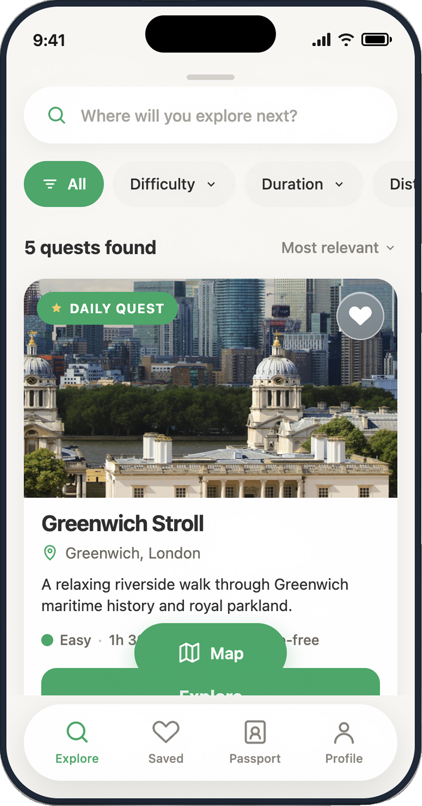
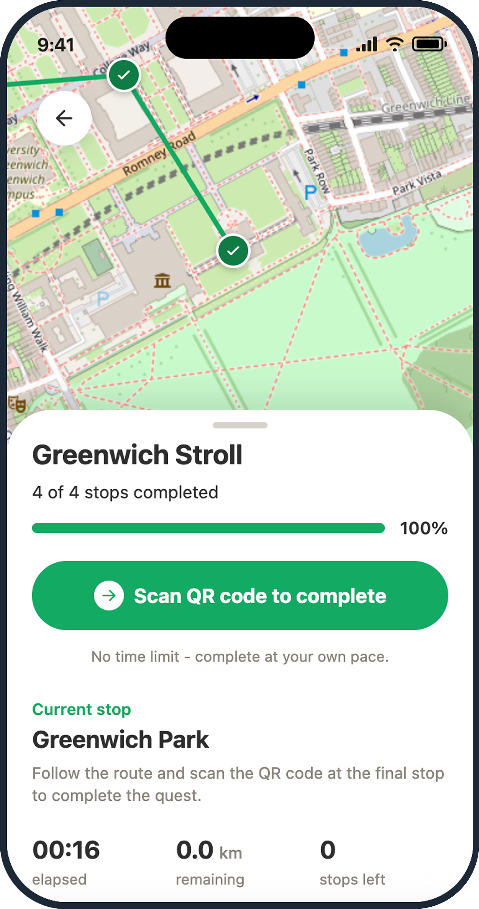
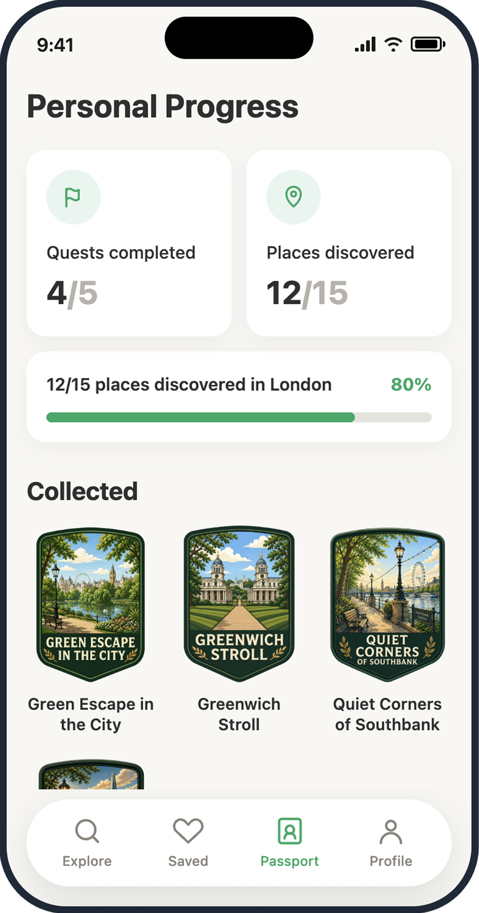
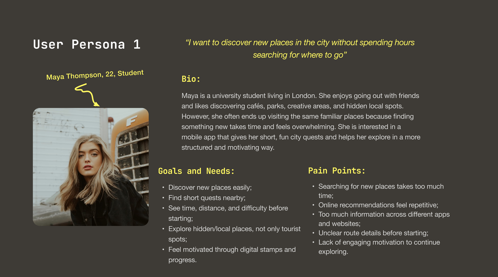
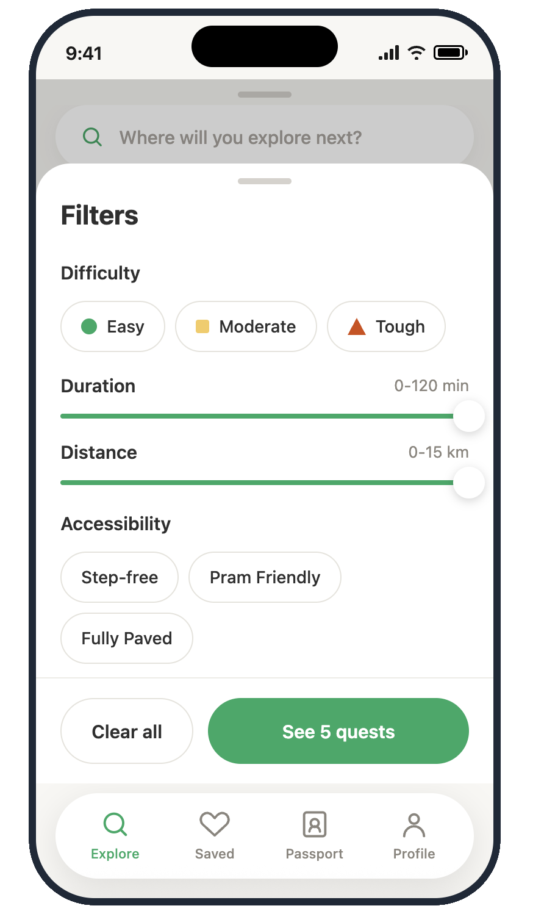
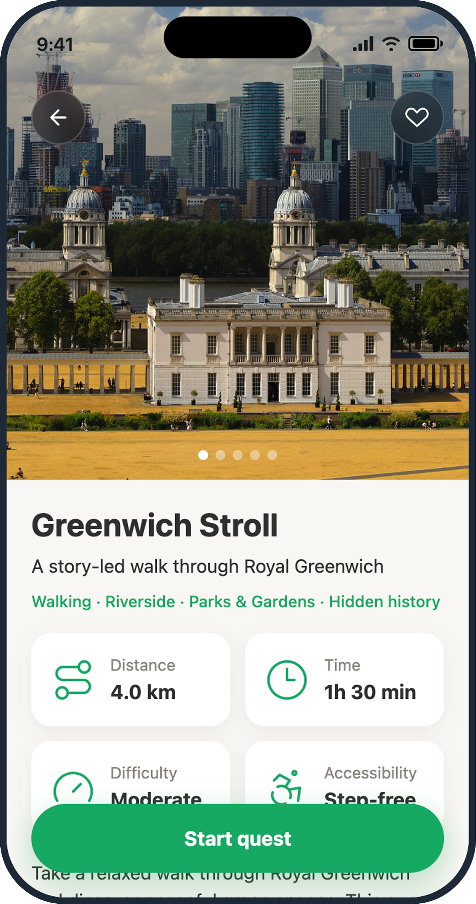
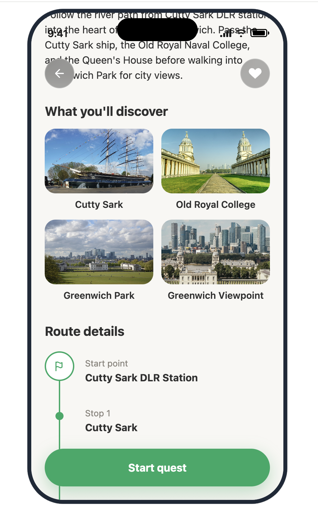
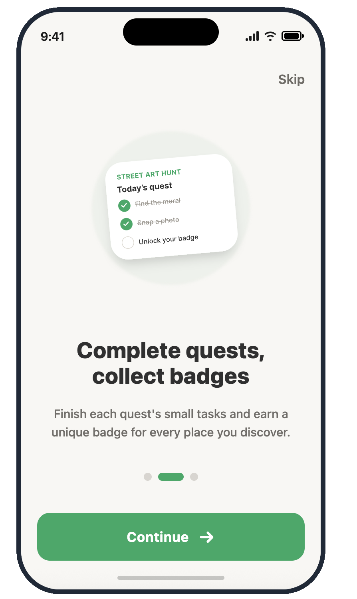
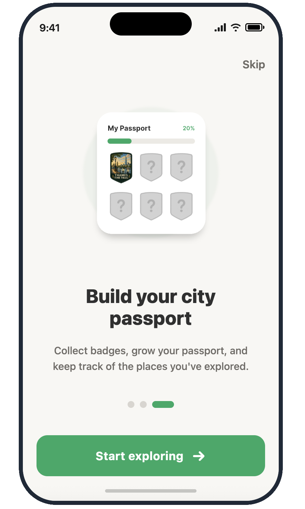

WAYO



About the
Product
WAYO is a mobile-first urban exploration product that helps people discover new places through ready-made quests, explore routes and collect digital stamps as a record of their experiences.
Unlike a concept-only case study, WAYO has been developed into a live MVP. As Co-founder and Product Designer, I continue to develop the product through user feedback, usability testing and post-launch analytics.
Year: 2026
Role: Co-founder &
Product Designer
Location: London, UK
Status: Live MVP ·
Ongoing

The
Problem
People living in large cities often fall into familiar routines, repeatedly visiting the same places even when they want to explore more. The problem is not a lack of places to discover, but the effort required to find something that feels worth the time.
Planning a new outing is often fragmented across Google Maps, social media, reviews and transport information. Even after choosing a place, the experience can feel passive, with little sense of progress, achievement or reason to continue exploring.
My Role &
Responsibilities
I co-founded WAYO and lead product design end-to-end — from early product strategy and MVP prioritisation to a live product that continues to evolve after launch.
Responsibilities:
- Product strategy & MVP prioritisation
- UX research & usability testing
- Competitive research & positioning
- Information architecture & user flows
- Wireframing, prototyping & mobile UI design
- Accessibility & inclusive UX
- Design QA & implementation support
- Launch, analytics & ongoing iteration
User &
Product Challenges
Research revealed four core product challenges that shaped the MVP.
Discover somewhere new without spending ages planning.
WAYO response: Ready-made quests reduce the research and planning required before going out.
Know whether a quest is worth the time before committing.
WAYO response: Visual quest cards and Quest Detail surface duration, distance, difficulty, accessibility and what users will discover.
Find experiences that match practical and accessibility needs.
WAYO response: Filters and accessibility information help users narrow quests before starting.
Feel motivated without competing with other people.
WAYO response: The Passport, stamps and personal progress create achievement without leaderboards.
Product
Goals
- Reduce planning effort. Help users quickly find ready-made activities.
- Support confident decisions. Give users useful information before starting a quest.
- Create motivation to explore. Use progress, stamps and collections.
- Keep exploration lightweight. Make quests feel achievable, flexible and simple.
- Build for iteration. Launch a focused MVP and improve it using research and analytics.
UX Research
& Key Insights
Early research combined user interviews and competitor analysis to understand how people currently discover new places, and what would make a quest-based app worth returning to.
Users were open to exploring new places but wanted the planning effort reduced.
Product response: Ready-made nearby quests and quick discovery options.
Before starting, users wanted to understand duration, distance, difficulty, transport, comfort, safety and what they would discover.
Product response: A detailed Quest screen containing important decision-making information.
Photos and the visual atmosphere of a location strongly affected whether users wanted to visit.
Product response: Large visual quest cards, concise descriptions and useful tags.
Most participants preferred personal progress over rankings, scores or leaderboards.
Product response: Personal collection and progression instead of competitive mechanics.
Users liked the idea of collecting proof of the places and experiences they completed.
Product response: The Digital Passport became one of WAYO's central features.
Primary
User
The Casual Urban Explorer

Age: 18–35
Context: Lives in or regularly explores London
Goals: Discover interesting places, make spontaneous plans and explore without spending too much time planning
Frustrations: Too much research and uncertainty about whether somewhere is worth visiting
Motivation: Personal experiences, memories and visible progress rather than competition
From Insights
to Structure
Each recurring insight was translated directly into a part of the product, so the structure reflects what research actually surfaced rather than a list of features.
→ Explore — ready-made quests
→ Quest Detail — important decision-making information
→ Active Quest / Map
→ Saved
→ Passport & Stamps
→ Profile — personal collection
Information
Architecture
The core loop — Discover → Decide → Explore → Complete → Collect — sits behind four main navigation tabs: Explore, Saved, Passport and Profile.

Core
User Flow

The primary flow follows Explore → Quest Detail → Active Quest / Map → Quest Complete → Stamp Earned → Passport, taking a user from browsing to a completed, collected memory.
Final Product
(UI)
Each screen answers a specific question a user has before, during or after a quest: What should I expect? Is this worth my time? Where am I now? What have I achieved?
Reducing the effort of finding somewhere new
The Explore screen surfaces ready-made quests instead of asking users to research a route themselves. Filters for difficulty, duration, distance and accessibility let people narrow choices without leaving the app.

Helping users decide before they commit
Research showed that distance, time, difficulty and accessibility directly affect whether someone starts a quest. The Quest Detail screen surfaces this information clearly before the "Start quest" step.


Turning discovery into action
Once a quest starts, the map view tracks progress against the route and stops, so users always know what's next, how much is left, and when a quest is complete.

Progress without competition
The Passport turns completed quests into a personal collection of stamps, reinforcing progress through memory rather than rankings or leaderboards.

From Design
to Live Product
WAYO did not stop at a Figma prototype. The MVP was developed and deployed as a working mobile-first product, allowing the experience to be tested beyond controlled usability sessions.
Launching the product introduced another feedback layer: I can now compare design assumptions with real user behaviour and use that evidence to guide future iterations.
TRY LIVE PRODUCTPost-launch
Analytics
Amplitude is connected to the live product to help understand how users interact with WAYO after launch. This creates a feedback loop between research, design decisions and actual product behaviour.
Which quests attract attention?
Do users move from viewing a quest to starting it?
Are filters, Saved and other discovery tools being used?
Where do users continue or leave the quest flow?
What's
Next
WAYO is a live MVP and the next stage focuses on making the exploration experience more complete and scalable.
Improve live location tracking and route guidance so users can follow quests more confidently while walking.
Expand the quest library across London and gradually cover more neighbourhoods and types of experiences.
Add more location and quest photography so users can better understand the atmosphere and value of an experience before starting.
Introduce authentication with Google and Apple so users can securely keep their saved quests, completed quests, stamps and progress across devices.
What I Learned
WAYO changed the way I think about product design because the work did not end when the final screens were created.
Research changed the hierarchy of the product: practical decision-making information became more important than adding more game mechanics, while personal progress proved more relevant than competitive features.
Launching the product also added a new feedback layer. Design decisions can now be compared with real user behaviour through analytics, helping prioritise future iterations using evidence rather than assumptions.
Research → Prioritisation → Design → Launch → Measurement → Iteration